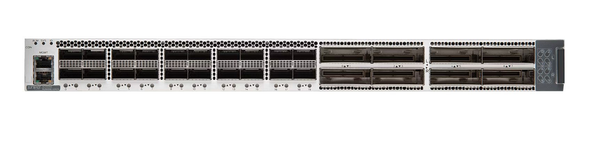

Juniper Routers
Empower your business with the latest in networking technology
Significantly enhance network operations with the industry's most scalable, programmable, and resilient routers. Juniper's extensive portfolio of top-tier routers delivers unmatched capacity, flexibility, and operational consistency, along with the end-to-end automation needed for service-aware networks in today's hyperconnected world.
Is your network causing you headaches? Simplify operations and enhance user experiences with industry-leading AI. Switch to the 2024 Gartner® Magic Quadrant™ Leader for Enterprise Wired and Wireless LAN Infrastructure and Indoor Location Services.
Solve problems faster, even prevent them from happening entirely. Learn how to make happy end-users and happy operators alike.
Learn MoreElevate your network beyond basic functionality. Discover why Juniper has been consistently recognized as a Leader in the Gartner Magic Quadrant for Enterprise Wired and Wireless LAN Infrastructure for four consecutive years.
Learn MoreJoin Juniper engineers as they demonstrate the capabilities of our top solutions, revealing how we harness AIOps to integrate AI, automation, and streamlined operations across your entire network. Tune in live or watch on-demand at your convenience.
Explore Juniper demosThe JRR200 Route Reflector Appliance offers an ideal solution for large service provider, data center, and enterprise networks with extensive routing table requirements.
Learn MoreOur software-defined router delivers a versatile, application-aware network fabric that meets rigorous enterprise demands for performance, security, and availability.
Learn MoreSafeguard your network edge, data center, and cloud applications with Juniper's next-generation physical, virtual, and containerized firewalls. Seamlessly manage them all through Juniper Security Director Cloud.
Learn MoreJuniper's integrated packet optical convergence solutions streamline operations for operators, reducing transport expenses and unlocking fresh revenue prospects.